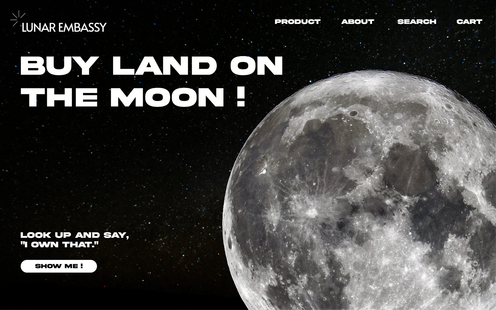
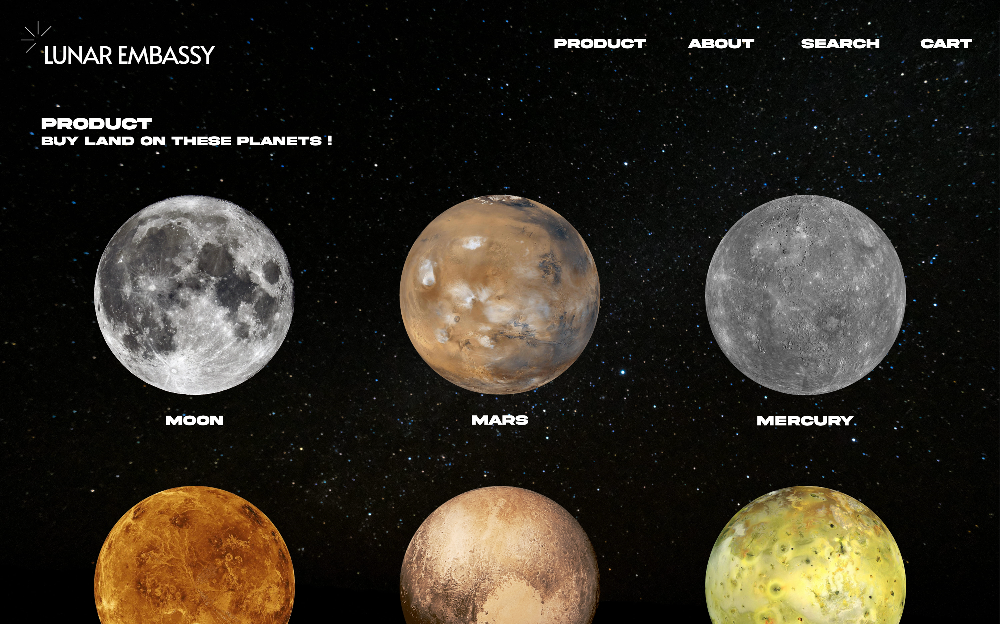
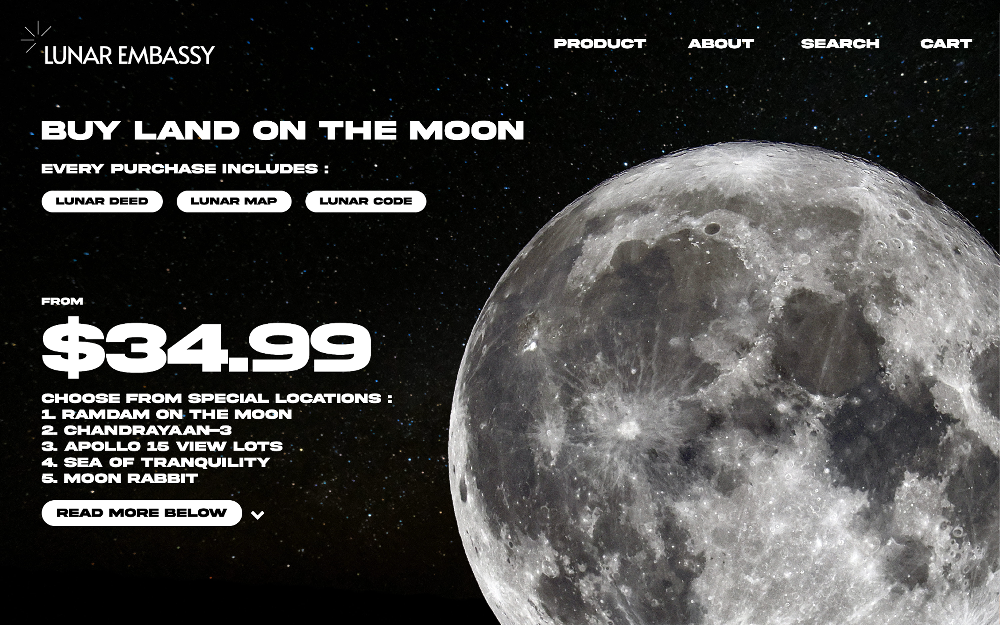
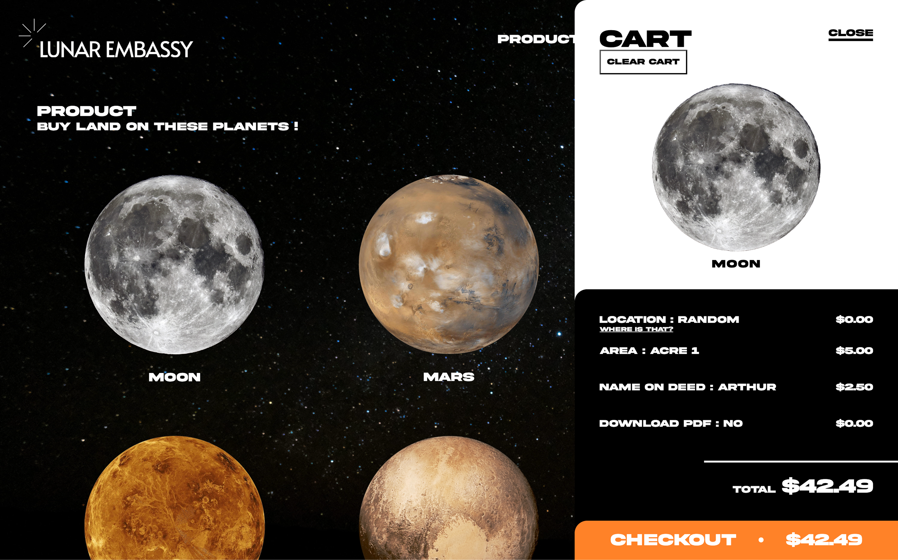

projects

projects
This project aimed to redesign a e-commerce online shopping website that is up and functioning alive. I chose Lunar Embassy as my website redesign client, mimic case studies, usability evaluation, and commute with client for art direction and project management. This is my very first case study and first project that I finished develop a fully functional website.
Lunar Embassy is a American company own by Dennis Hope since 1980, that sell land property on the moon as well as other planets like Mars, Pluto, and more.
After research and used the Lunar Embassy official website, a few aspects can be improve to achieve better usability. For example the intensive text line height spacing, illogical layout among web pages, and poor resolution images. These aspects has combine creating a difficult readability and occupying viewers’ cognitive load, which severely damaging user experience and satisfaction.

I went through major pages in Lunar Embassy, and identify those design aspect that are reducing user experience. I found many elements are inconsistency and texts has low readability and legibility. I pointed these aspect out for later on refine purpose. Beyond those negatives, I also pointed out some positives that I wish to implement similar idea in the update webstie.

After research and lock down some aspects need to be changed. I set up project overview, goals, objectives and their approaches and solutions.
I find this part was extremely important when the projects progress approach to second half. I need to consistently remind myself what are the objectives are to be able to stay on track. There were multiple times that I wanted to explore bold and artistic styles that are not aligned with the objectives and goals. The process helped to provide a clear guild towards wanted result.

Same as last part, Ideation and style has contribute to remind me what are the style are chosen that needs to be followed. Although there were multiple times I’ve been iterating a lot in each ideas, but the process has been making progress and generate new ideas every time I went back to previous design.
I have made a couple wireframes for mobile and laptop, so I did not struggle a lot in this project. I did a couple version, iterate back and forth a couple times, then I have finalise both versions in wireframes.

To the most exciting part – Prototyping. I did have experience of making Figma prototypes for other projects, but this was my first time building a website prototype. There were a couple time that I struggle when link elements with each other and that I need to make different variant just to show one tiny detail.
Overall, making the prototype is my little pleasure in this project, it was fun and I really enjoy making live prototype.
I did not draw too much attention when it comes to testing. For the every first time making website redesign, I am very confident with my work, and this was a huge blunder in this projects. I find certain designs are very hard to achieve through coding, or just I did not have much coding experience back at the time.
I realised how important is testing until I took Usability Evaluation in the next semester. I wish I could face testing a little bit more attention so that I can save some time and efforts in coding. Imagine this is a serious agency and a huge company project. This despise could cause projects delay and cost more for my mistake.
The coding has went better than I expected. I did faced a couple tricky problems that drives me crazy for a couple days, but the whole process has not exceed my expectation.
My approach when facing a coding problem was try to fix it myself: edit different variable or paste code into console to test it out; if it cannot be fixed by my own, then I would start my research or else asking help from LLMs for assistant.
One difficulty I faced was the cart function. I do not know how to make the cart to be able to update through each page. I started mess around of different variables see if there’s any changes, this last for two days night; then I do some research, found there’s a way of writing html code by JS, which I can theoretically copy current code to a new page. Eventually the cart was up and ready to go! I jumped out of the chair when I successes, it was the best highlight in the project.
Overall, I think this is a great opportunity for me to actually code a website that is commerce based, even there’s multiple problems that I need to fix in limited time, but and I really enjoy this phase of struggle and success at the end.
I got confused with the way of making a mobile-responsive website. Specifically, I’m unsure whether I should start by creating separate versions for mobile and laptop, or develop both versions simultaneously. I believe both approaches can lead to great results, but by not constructing the two versions separately, it may be easier to identify and fix issues as they arise, allowing for quicker and more consistent solutions across both versions.
My working process involved starting by building the HTML based on my UI prototype, then adding CSS, and finally JavaScript. However, at some point, the HTML didn’t align with the JavaScript logic I wanted to implement. As a result, I had to either change my JavaScript approach or insert and delete HTML elements that I had already created.
Sometimes the CSS doesn’t work at all, even after I’ve made major changes. While the console can help identify the causes, my experience with using it is still limited, so it hasn’t always helped me pinpoint the main errors. I’ve encountered multiple CSS issues throughout the process, including classes overriding previous statements, z-index mismatches, and inconsistent font sizes when switching between mobile and laptop views. Although I was able to fix these problems in the end through careful check in CSS, but they were very time-consuming and required a lot of patience and careful observation.
This project aimed to redesign a e-commerce online shopping website that is up and functioning alive. I chose Lunar Embassy as my website redesign client, mimic case studies, usability evaluation, and commute with client for art direction and project management. This is my very first case study and first project that I finished develop a fully functional website.
The following are my three phases report for this project. Including my case-study and design process documentations.